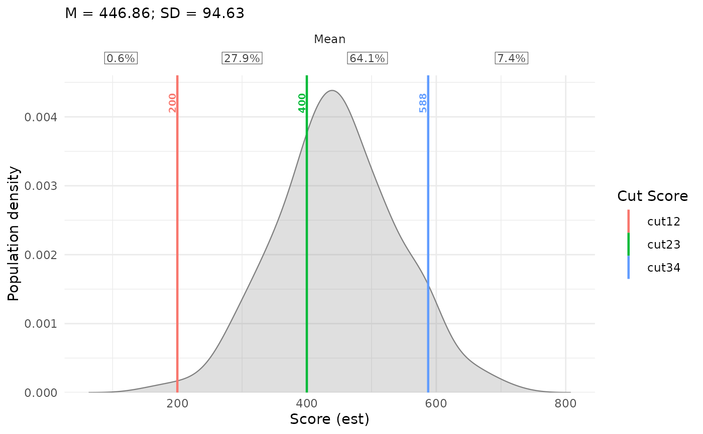
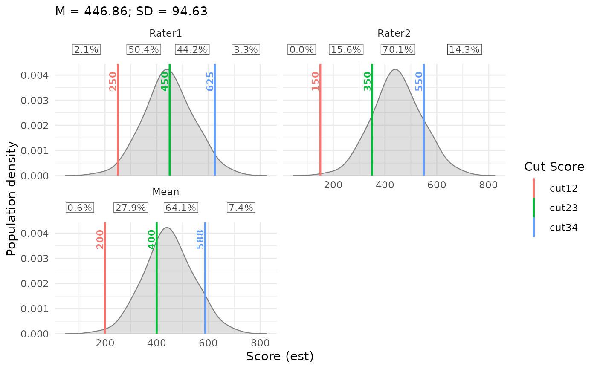
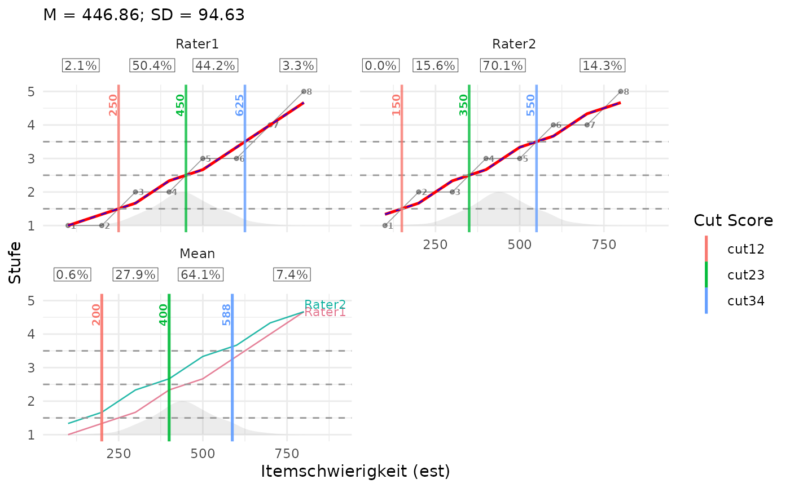
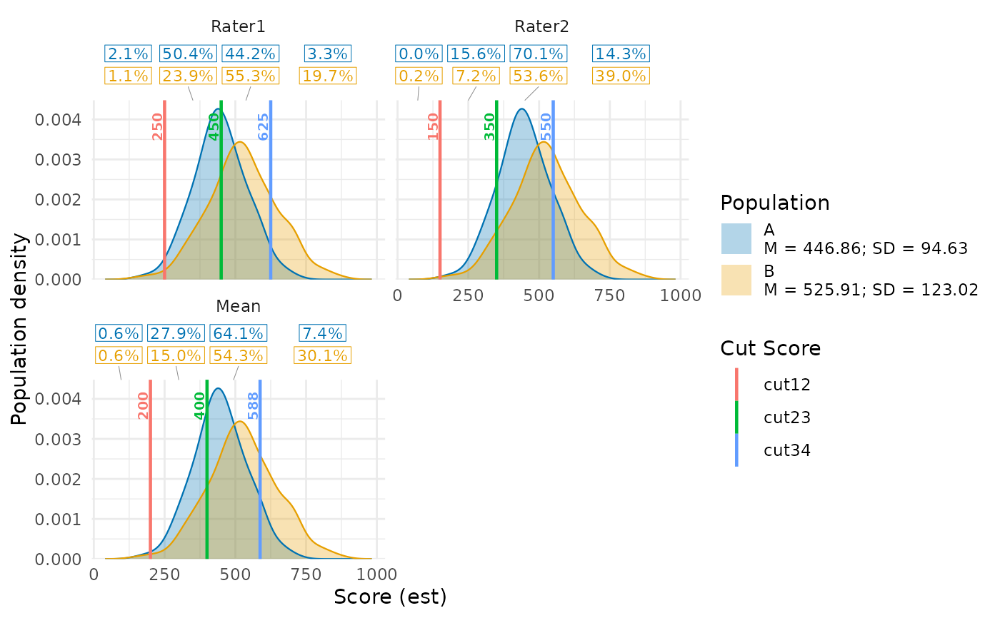
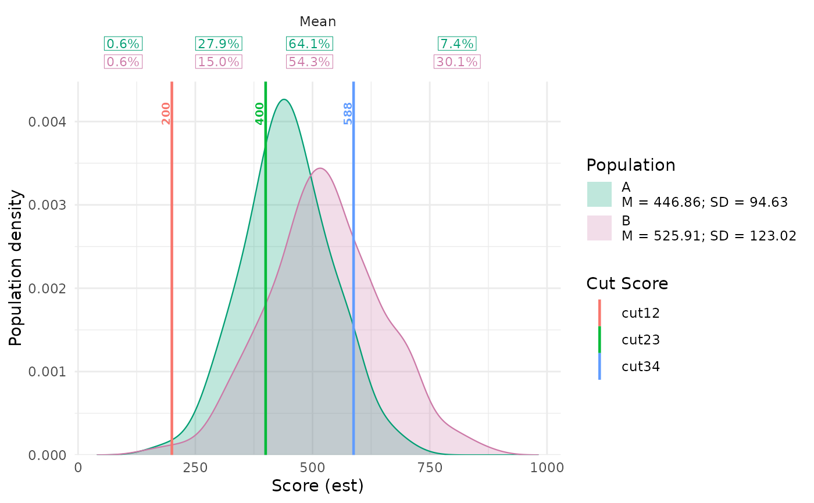
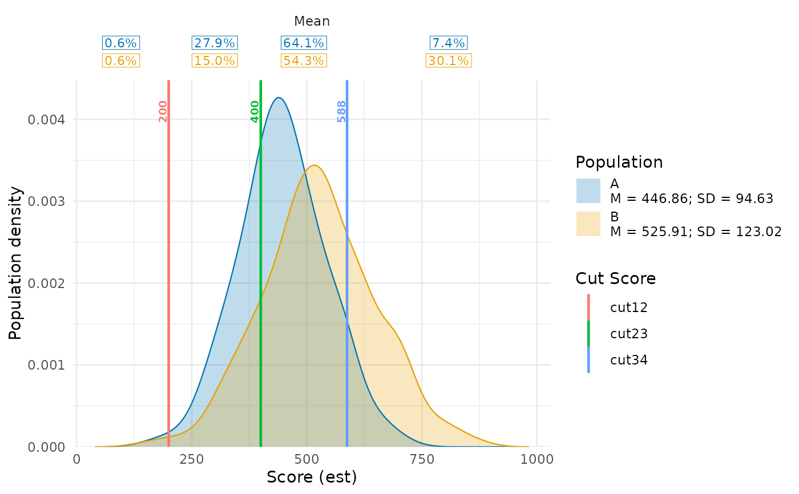
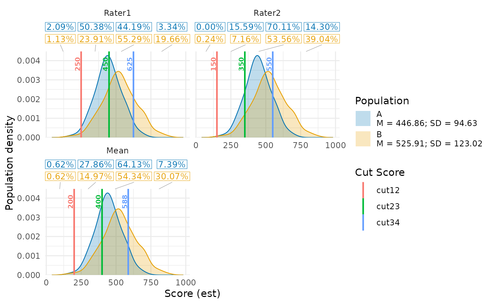
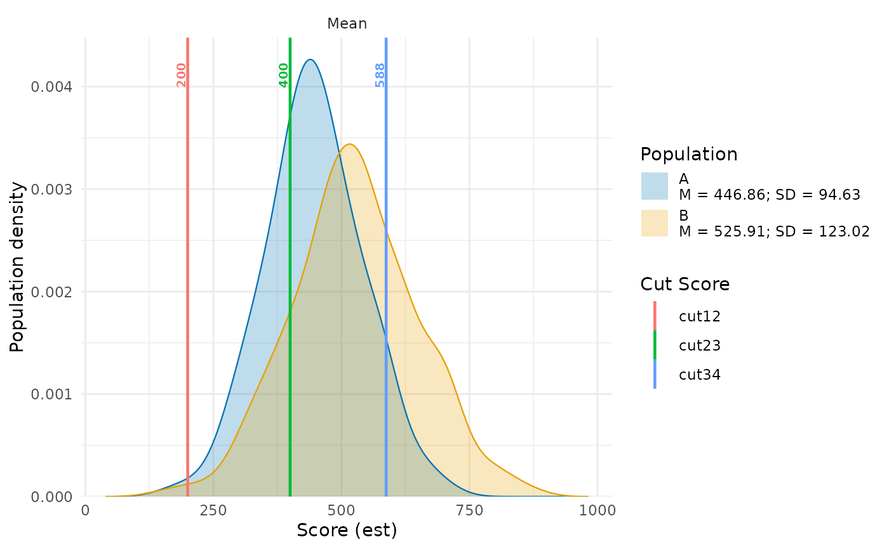
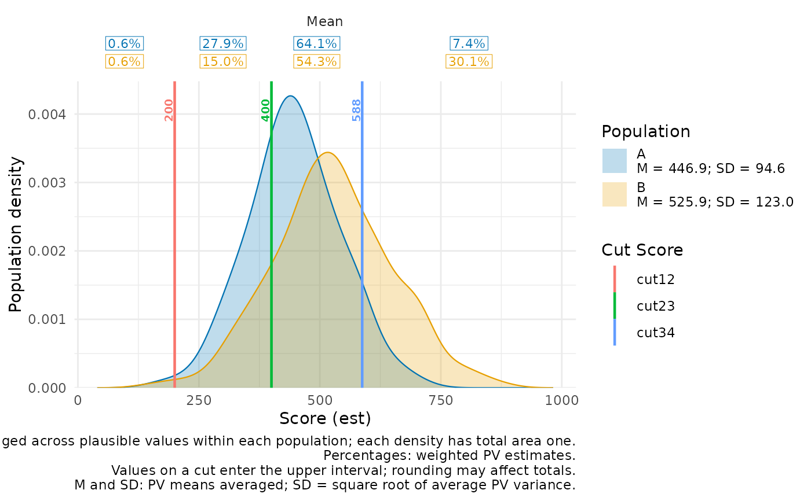
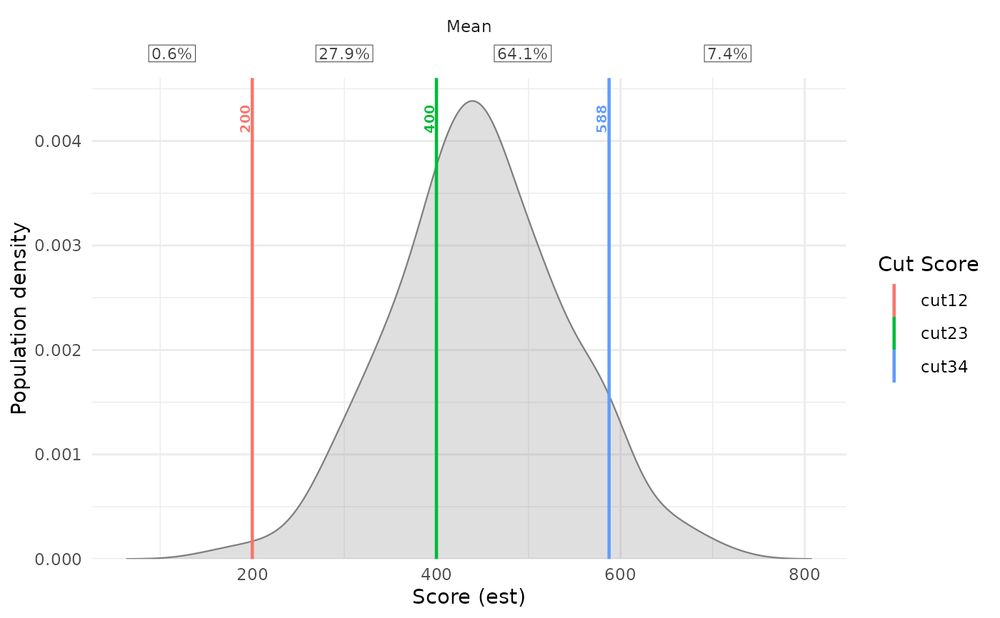

Plot Population Distributions from Plausible Values with IDM Cuts
plotPopulationCutsIDM.RdEstimates a population density from wide- or long-format plausible values (PVs)
and draws IDM cut scores over it. An optional grouping column overlays multiple
population densities with transparent fills. The y-axis represents population density.
For a distribution-shape silhouette behind rater curves, use plotCutsIDM.
Usage
plotPopulationCutsIDM(
res_list,
pv_data,
pv_cols = NULL,
respondent_id_col = NULL,
pv_id_col = NULL,
pv_value_col = NULL,
weight_col = NULL,
input_format = c("auto", "long", "wide"),
pv_missing = c("error", "drop"),
density_bw = NULL,
density_adjust = 1,
cut_selection = c("mean", "individual", "both"),
est_col = NULL,
show_cut_values = TRUE,
cut_value_digits = 0L,
cut_value_size = 2.6,
population_fill = "grey50",
population_alpha = 0.25,
population_col = NULL,
population_colors = NULL,
show_percentages = TRUE,
percentage_digits = 1L,
percentage_size = 3,
show_population_stats = TRUE,
population_stats_digits = 2L,
show_caption = FALSE
)Arguments
- res_list
A list returned by
computeCutsIDM. Cut scores are used as stored, without re-estimation.- pv_data
A data frame of plausible values for one domain, optionally containing several populations identified by
population_col. PVs must already use the same metric as the item estimates and cuts. No scale conversion is performed.- pv_cols
Character vector of PV column names for wide input, with one row per respondent. Required for wide input; other numeric columns are never selected automatically.
- respondent_id_col
Optional respondent ID column for wide input; required for long input. Wide IDs must be unique within each population. The same ID may occur in different populations. IDs are population respondent identifiers, not rater or item identifiers.
- pv_id_col
PV identifier column for long input, for example a column containing
"PV1","PV2", and so on. Required together withpv_value_colandrespondent_id_col. Each respondent-PV combination must be unique within its population.- pv_value_col
Numeric PV value column for long input.
- weight_col
Optional numeric sampling-weight column. Default
NULLuses equal weights. Weights must be finite, non-missing, non-negative, and constant across PVs for each respondent within a population. Zero-weight observations are excluded.- input_format
Input layout.
"auto"selects long format whenpv_id_colorpv_value_colis supplied, and wide format otherwise. Supply only the column selectors for the chosen layout.- pv_missing
Missing-PV policy. Default
"error"rejectsNA/NaNvalues and omitted respondent-PV rows."drop"omits these with a warning and renormalizes weights separately within each PV. Infinite PVs and missing or invalid weights always cause an error. Every PV must retain at least two observed respondents with positive weights.- density_bw
Optional positive finite numeric bandwidth in score units. When
NULL, average the unweightedstats::bw.nrd0()bandwidths across PVs within each population after exclusions, then average those population means. This common bandwidth is used for every population and PV; automatic bandwidth selection does not account for sampling weights.- density_adjust
Positive finite multiplier for the common bandwidth. Values above one produce more smoothing; values below one produce less.
- cut_selection
"mean"(default) draws cuts fromres_list$cuts_summary."individual"creates one facet per rater with cuts fromres_list$cuts_per_person."both"adds a mean-cut facet to the individual facets. All facets show the same population density on fixed axes.- est_col
Optional x-axis metric label. Defaults to
res_list$est_col, or"est"if unavailable. This changes the label only.- show_cut_values
Logical scalar. Show numeric labels next to finite cut lines.
- cut_value_digits
Non-negative integer scalar. Digits after the decimal point for rounding cut labels; trailing zeros are removed. Default
0L.- cut_value_size
Finite non-negative cut-label text size in millimetres. Default
2.6.- population_fill
Character vector of density fill and outline colors. An explicitly supplied single color applies to all populations. Otherwise supply exactly one color per observed population, in order of first appearance in the data (the population legend order); vector names are ignored. Too few or too many colors, including an empty vector, trigger a warning and restore the default colors. If omitted, ungrouped input uses
"grey50"; grouped input uses the automatic palette described underpopulation_colors. Explicitpopulation_colorstakes precedence.- population_alpha
Finite fill opacity between zero and one. Default
0.25.- population_col
Optional grouping column identifying populations in wide or long input. Labels must be non-missing and non-empty. Groups are drawn and listed in their order of first appearance; unused factor levels are ignored. Default
NULLtreats all rows as one population and preserves the ungrouped plot.- population_colors
Optional named character vector of colors, with exactly one name matching each observed population label. Requires
population_coland takes precedence overpopulation_fill. With neither color argument supplied, grouped input uses blue and orange for two groups (blue for one), or a qualitative palette for more groups. A separate fill legend identifies populations; cut colors keep their existing meaning.- show_percentages
Logical scalar. Default
TRUEadds a percentage table at the top of each panel. Each population has a colored row, in population-legend order.FALSEhides the table and its additional caption.- percentage_digits
Integer scalar from zero to ten. Decimal places shown in percentage labels. Default
1L. Rounding is for display only and can make displayed totals differ slightly from 100 percent.- percentage_size
Finite non-negative text size in millimetres for the percentage table. Default
3. For many intervals or small figures, reduce this size or increase the figure width.- show_population_stats
Logical scalar. Default
TRUEdisplays the estimated mean (M) and standard deviation (SD) below each population name in the fill legend. For ungrouped data, they appear in the subtitle.FALSEhides these statistics and their explanatory caption line independently ofshow_percentages.- population_stats_digits
Integer scalar from zero to ten. Decimal places in displayed M and SD values. Default
2L. Legend and subtitle text sizes can be adjusted with the correspondingggplot2::theme()settings.- show_caption
Logical scalar. Default
FALSEhides explanatory plot captions. Set toTRUEto explain the density and, when displayed, percentages and M/SD below the plot. Does not affect statistics, percentage labels, or the subtitle.
Details
A Gaussian kernel density is estimated separately for each PV, using sampling
weights normalized to sum to one within that PV. These densities are averaged
with equal weight across PVs. All estimates use a common bandwidth and a shared
grid extending three bandwidths beyond the observed PV range. The grid has at
least 512 points and becomes finer when needed to resolve the bandwidth.
Smoothing settings requiring excessive grid resolution cause an error;
increase density_bw or density_adjust in that case.
Respondents' PVs are never averaged before estimating the distribution. The
automatic bandwidth is based on the respondent count within each PV, not on the
number of stacked PV observations.
With population_col, PV preparation, missing-data checks, and weight
normalization are performed separately within each population. Each population's
density averages its own PV densities and has total area one; the plotted height
is not proportional to population sample size or the sum of its weights. All
populations share the same bandwidth and grid spanning their combined PV range.
The automatic bandwidth gives equal weight to each population's mean PV
bandwidth, including when populations have different numbers of PVs in long
input. Missing-data requirements apply within each population; a PV identifier
entirely absent from a population's long input cannot be detected.
Filled densities overlap without stacking, with separate colored outlines.
population_alpha controls their transparency. Named colors can be reused
in both plotting functions to keep the population colors consistent. Cut lines
are drawn over the densities, and all selected rater/mean facets repeat the same
set of distributions on fixed axes.
With show_population_stats = TRUE, M and SD are calculated from the
observed PVs and sampling weights, separately within each population and PV.
For each PV, normalize weights to sum to one, compute its weighted mean, and
multiply the weighted mean squared deviation by \(n_j/(n_j-1)\) before taking
the square root. Here \(n_j\) is the number of observed respondents with
positive weights in that PV and population, after missing-data handling.
The displayed M averages the PV means; the displayed SD is the square root of
the average PV variance: \(SD = \sqrt{m^{-1}\sum_{j=1}^{m} SD_j^2}\), where
\(m\) is the number of PVs. Every PV has equal weight. No variance component
for differences between PV means is added. This estimates population SD with
an \(n_j/(n_j-1)\) variance correction; it is not a standard error.
Respondents' PVs are never averaged before computing these statistics.
With pv_missing = "drop", each PV uses its own available observations
and renormalized weights. Zero-weight observations are excluded.
Both statistics use the supplied score metric and are independent of cuts,
zooming, density bandwidth, and cut selection. They are computed before kernel
smoothing, so SD is not derived from the smoothed density curve. All facets
share these population statistics; the mean-cut panel does not alter them.
With show_percentages = TRUE, shares are computed directly from the PV
observations, independently of density estimation. For each population and PV,
sum the sampling weights in each cut interval and divide by the total available
weight for that population and PV. Multiply by 100 and average these percentages
equally across PVs. Respondents' PVs are never averaged before classification.
Without weight_col, observations have equal weight. With
pv_missing = "drop", each denominator uses the available observations
separately for its population and PV.
For cuts \(c_1, \ldots, c_K\), intervals are \((-\infty, c_1)\), \([c_1, c_2)\), through \([c_K, \infty)\). A value exactly on a cut enters the upper interval. Identical adjacent cuts create an empty interval with zero percent. All observed PVs are included, including values outside the visible plot range. Actual unrounded cuts determine membership: changing cut-label rounding or density smoothing does not change percentages. Individual panels use their rater's cuts. The mean panel recomputes shares at the mean cuts; it does not average rater percentages.
Percentage labels are horizontally centered between the visible cut positions. For outer intervals, the midpoint between the outermost cut and the visible panel edge is used. Narrow or empty intervals retain their labels: overlapping labels are shifted as little as possible while preserving their order, with thin lines connecting shifted columns to their interval midpoints. Population rows share the same horizontal positions. Placement is recalculated at drawing time using the actual text widths, including after zooming or reversing the score axis. Intervals wholly outside a zoomed view are anchored at its edge; zooming does not change their percentages. Rows follow population-legend order and colors; ungrouped data have one neutral row. The table occupies a separate band above the data, with height determined by its text size and number of rows. It does not change the data axes or overlap curves when the figure is resized. Increase figure height for many panels or populations, and figure width for many intervals. If the combined label widths exceed the panel width, text and padding are reduced together to fit; increase figure width to retain the requested text size. If a panel has any missing or infinite cut, its percentage table is replaced with an explanatory message and a warning identifies the panel. Descending cut sequences cause an error when percentages are enabled.
Percentage labels are estimated population shares. Unlike these numeric labels,
silhouette height in plotCutsIDM() communicates distribution shape only,
not rating stages or readable density-axis values.
These are descriptive point estimates without confidence intervals or
replicate-weight variances. Sampling weights
affect the estimated density, but not the automatic bandwidth rule. An explicit
density_bw can be supplied when a different smoothing choice is needed.
With pv_missing = "drop", different PVs may use different respondent
subsets; missing cases are not imputed. A PV entirely absent from long input
cannot be detected, so include every intended PV identifier in the input.
PVs and cuts are drawn directly on their supplied score metric. The x-range includes the density grid and all finite selected cuts. The density is repeated unchanged across rater and mean facets; it is not conditioned on the rater.
Here the y-axis is population density. In contrast, the optional background in
plotCutsIDM() is a silhouette showing distribution shape only:
its height is scaled for display and does not represent rating stages
or density-axis values. Use this standalone plot when the density axis matters.
Both functions use the same population preparation and density calculation.
References
OECD, PISA Research Documentation: How to prepare and analyse the PISA database. https://www.oecd.org/en/about/programmes/pisa/how-to-prepare-and-analyse-the-pisa-database.html
Examples
items <- data.frame(
est = seq(100, 800, by = 100),
Rater1 = c(1, 1, 2, 2, 3, 3, 4, 5),
Rater2 = c(1, 2, 2, 3, 3, 4, 4, 5)
)
cuts <- computeCutsIDM(items, boundaries = c(1.5, 2.5, 3.5))
## Synthetic PVs on the same score metric as the item estimates and cuts.
set.seed(42)
population <- data.frame(
student = seq_len(200),
PV1 = rnorm(200, 450, 100),
PV2 = rnorm(200, 450, 100),
weight = runif(200, 0.5, 2)
)
## Standalone density with mean cuts: the y-axis represents density.
plotPopulationCutsIDM(cuts, population, pv_cols = c("PV1", "PV2"),
weight_col = "weight")

## Compare individual and mean cuts over the same population distribution.
plotPopulationCutsIDM(cuts, population, pv_cols = c("PV1", "PV2"),
weight_col = "weight", cut_selection = "both",
density_adjust = 1.2, cut_value_size = 3)

## Equivalent long input: one row per respondent and PV.
population_long <- tidyr::pivot_longer(
population, cols = c("PV1", "PV2"),
names_to = "pv", values_to = "score"
)
plotPopulationCutsIDM(cuts, population_long,
respondent_id_col = "student",
pv_id_col = "pv", pv_value_col = "score",
weight_col = "weight")
 ## Background silhouette: distribution shape only.
## Its height does NOT represent rating stages or density-axis values.
plotCutsIDM(cuts, pv_data = population, pv_cols = c("PV1", "PV2"),
weight_col = "weight", show_aggregate = TRUE,
population_height = 0.25, population_alpha = 0.15)
## Background silhouette: distribution shape only.
## Its height does NOT represent rating stages or density-axis values.
plotCutsIDM(cuts, pv_data = population, pv_cols = c("PV1", "PV2"),
weight_col = "weight", show_aggregate = TRUE,
population_height = 0.25, population_alpha = 0.15)

## Compare two populations; student IDs may repeat between populations.
population$group <- "A"
population_b <- population
population_b$group <- "B"
population_b[c("PV1", "PV2")] <- 450 +
1.3 * (population_b[c("PV1", "PV2")] - 450) + 80
populations <- rbind(population, population_b)
colors <- c(A = "#0072B2", B = "#E69F00")
plotPopulationCutsIDM(cuts, populations, pv_cols = c("PV1", "PV2"),
respondent_id_col = "student", weight_col = "weight",
population_col = "group", population_colors = colors,
population_alpha = 0.3, cut_selection = "both")

## Alternatively, supply fill colors in population legend order.
plotPopulationCutsIDM(cuts, populations, pv_cols = c("PV1", "PV2"),
weight_col = "weight", population_col = "group",
population_fill = c("#009E73", "#CC79A7"))

## A single population_fill color would apply to both groups.
## Three colors for these two groups would warn and restore the default palette.
## Equivalent grouped long input.
populations_long <- tidyr::pivot_longer(
populations, cols = c("PV1", "PV2"), names_to = "pv", values_to = "score"
)
plotPopulationCutsIDM(cuts, populations_long, respondent_id_col = "student",
pv_id_col = "pv", pv_value_col = "score", weight_col = "weight",
population_col = "group", population_colors = colors)

## Percentages use actual panel cuts, independently of density smoothing.
plotPopulationCutsIDM(cuts, populations, pv_cols = c("PV1", "PV2"),
weight_col = "weight", population_col = "group",
cut_selection = "both", percentage_digits = 2,
percentage_size = 3.5)

## Hide percentage tables, keeping the density and numeric cut labels.
plotPopulationCutsIDM(cuts, populations, pv_cols = c("PV1", "PV2"),
weight_col = "weight", population_col = "group",
show_percentages = FALSE)

## Format M and SD in the population legend, independently of percentages.
plotPopulationCutsIDM(cuts, populations, pv_cols = c("PV1", "PV2"),
weight_col = "weight", population_col = "group",
population_stats_digits = 1, show_caption = TRUE)

## Hide M and SD while keeping the cut-interval percentages.
plotPopulationCutsIDM(cuts, population, pv_cols = c("PV1", "PV2"),
weight_col = "weight", show_population_stats = FALSE)
